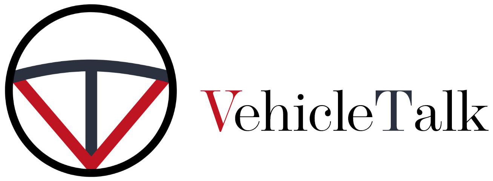

< Home
Project Exam 1: Vehicle Talk
Website
Github
Changes I made:
General
I really like this website and it is the one I am most proud of so far. There was really not that much to change. I would have liked getting the contact form and comments to Post to the wordpress site and then Get the comments back. But I chose to priorites the other websites that I saw needed more changes to them. Hopefully I will find time in the Christmas period to study this more.
Changing a site that you really like without teacher comments is also very hard.
I added a to top button that only displays when scolled past the first 100px. When clicked it takes you back to the top. I added this beacuse it was one of the feedbacks I had during the user testing but did not have time to implement before the time limit. I had to google what part of the document to target with scrolltop as there was one for safari and one for the rest of the browsers. But the the rest of the code is mine. Source:https://www.w3schools.com
I cosidered making the nav sticky on scroll also, but when I had the to the top button on the pages that got a scroll bar I figured it was unnecessary.